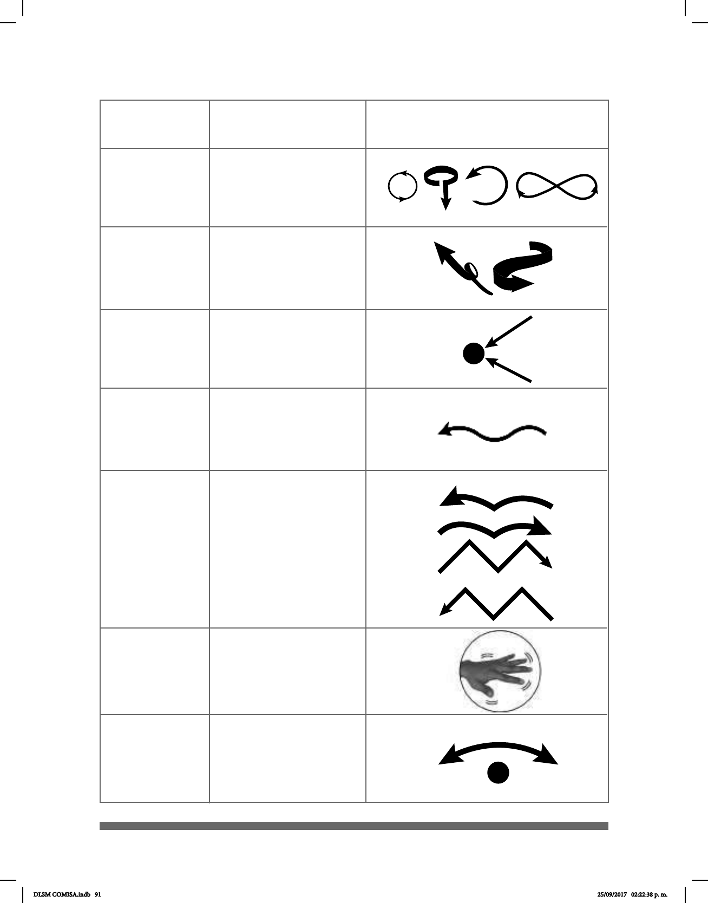

91
Circular (circ)
Espiral (es)
Flexión de
dedos (f)
Ondulante (ond)
Salto
Movimiento
vibratorio local
(vib)
Cabeceo de
muñeca (cab)
La mano, la muñeca o
el brazo se mueven
formando círculos o
semicírculos.
La mano o el brazo
siguen una trayectoria
de movimientos
circulares.
Los dedos se retraen.
La mano o el brazo
sigue una trayectoria
ondulada.
La mano o los dedos
simulan uno o varios
saltos.
La mano tiembla.
La mano se mueve de
atrás hacia adelante
exionando sólo la
muñeca.
MOVIMIENTO
DESCRIPCIÓN DEL
MOVIMIENTO
IMAGEN
DLSM COMISA.indb 91 25/09/2017 02:22:38 p. m.